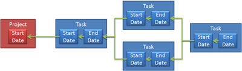
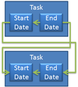

Reply to comment
Dependent properties
Update Controls treats all of your view model properties as dependent behind the scenes. You don’t do any extra work to manage them. But sometimes, you need to take control of dependent properties yourself. To do this, you use the Dependent class. Download the source code for this example.
Dependent sentry
As an example, we’ll create a critical path calculator. This program takes a set of tasks in a project and calculates when they will complete. The end date of a task is calculated as its start date plus its duration. We express that using a Dependent sentry.
private DateTime _endDate; private Dependent _depEndDate; public Task() { _depEndDate = new Dependent(() => _endDate = CalculateEndDate()); } public DateTime EndDate { get { _depEndDate.OnGet(); return _endDate; } } private DateTime CalculateEndDate() { return StartDate.Add(Duration); }
The Dependent sentry manages the EndDate property. When someone accesses EndDate, the sentry is notified. If the end date is out-of-date, it calculates it. StartDate is called a precedent of EndDate. Precedents can either be independent or dependent. When a precedent is dependent, we’ve constructed an indirect dependency.
Indirect dependencies
We can see from the above code that EndDate depends upon StartDate. But in our system, StartDate itself is dependent. If the task has prerequisites, it depends upon the latest end date of those other tasks. If it does not, it depends upon the start date of the project as a whole. We can express this as a Dependent as well.
private readonly Project _project; private DateTime _startDate; private Dependent _depStartDate; public Task(Project project) { _project = project; _depStartDate = new Dependent(() => _startDate = CalculateStartDate()); } public DateTime StartDate { get { _depStartDate.OnGet(); return _startDate; } } private DateTime CalculateStartDate() { DateTime? latest = null; foreach (Task prerequisite in Prerequisites) if (latest == null || latest < prerequisite.EndDate) latest = prerequisite.EndDate; return latest ?? _project.StartDate; }
The Dependent sentry calculates the start date whenever it is out-of-date. Since CalculateEndDate accesses StartDate by the property (not by the field _startDate), it triggers this update when necessary.
Dependency chaining
The start date of a task depends upon the end dates of all of its predecessors. Those end dates in turn depend upon their start dates. These dependencies chain together, linking the end date of the last task all the way back to the start date of the project. When the project start date changes, the entire chain becomes out-of-date and needs to be recalculated.
{kind=link}
If a duration is changed in the middle of the chain, it affects only that task’s end date, and the dates of all tasks that follow. The Dependent sentry is looking at all properties accessed directly and indirectly by the Calculate methods.
If two or more properties depend upon the same precedent, then that precedent is calculated only once. A naive traversal of the graph to the right would calculate the first task twice. But the Dependent sentry is keeping track of when its precedents change. If they haven’t changed since the last time it was updated, it doesn’t recalculate. Update Controls will calculate the first task only once in order to determine the end date of the last task.
Cycles
It is possible to set up a cycle in this model. You could inadvertently make two tasks prerequisites of each other. If you do, Update Controls will not be able to determine the correct order for calculating the graph. In this situation, you will not get the correct answer. Indeed, there may not be a correct answer; if the tasks both have a non-zero duration, then no dates would satisfy the equations. Update Controls will not search for a solution to a system of equations. Instead, it will just stop calculating when it discovers a dependency.
{kind=link}
Previous versions of Update Controls threw an exception when a dependency was discovered. Unfortunately, this interacted with the user interface. When the exception was thrown, a dialog box appeared. Then, Update Controls tried to refresh the UI behind the dialog box. The dependency tracking system was in a bad state from the cycle, which caused another false cycle to be detected. The information ultimately presented to the developer did not indicate the correct cycle, and simply distracted from the real problem.
Now Update Controls simply writes “Cycle discovered during update” do the debug output. Check for this in the trace window if you ever suspect that you have created a cycle.
Recent comments
3 years 13 weeks ago
3 years 19 weeks ago
3 years 44 weeks ago
3 years 46 weeks ago
3 years 47 weeks ago
4 years 3 days ago
4 years 3 days ago
4 years 17 weeks ago
4 years 17 weeks ago
4 years 21 weeks ago